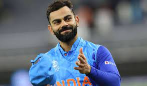

BTECH
Branch:COMPUTER SCIENCE AND ENGINEERING
College: GAYATRI VIDYA PARISHAD COLLEGE OF ENGINEERING(AUTONOMOUS)
To go to college website click on image
My name is Kumar Raja.I am from Visakhapatnam
Branch:COMPUTER SCIENCE AND ENGINEERING
College: GAYATRI VIDYA PARISHAD COLLEGE OF ENGINEERING(AUTONOMOUS)
To go to college website click on image
.jpeg)
Here are some key points about Virat Kohli:
.jpeg)
.jpeg)
Clash of Clans is a 2012 free-to-play mobile strategy video game developed and published by Finnish game developer Supercell. The game was released for iOS platforms on August 2, 2012, and on Google Play for Android on October 7, 2013. The game is set in a fantasy-themed persistent world where the player is a chief of a village. Clash of Clans tasks players to build their own village using the resources gained from attacking other players' villages with troops, earning rewards, buying them with medals or by producing them at their own village. Players can conjoin to create clans - groups of up to fifty people - who can then participate in Clan Wars together, donate and receive troops, and chat with each other.